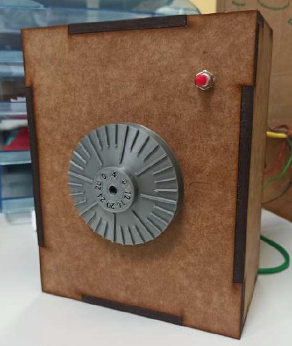
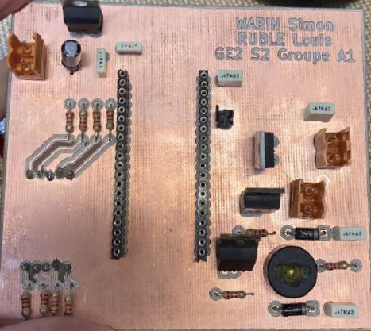

Duration
February 2021 - July 2021
Location
IUT de Cachan
Description
As part of my studies in Electrical Engineering and Industrial Computing, I developed a digital safe puzzle for an Escape Room experience. My primary focus was on programming and electronics for this interactive element. I used C++ on an Mbed microcontroller to bring the safe to life. The programming involved creating a state machine to control the safe's overall functionality. I implemented handlers for the rotary encoder input and button confirmation. A clever audio feedback system was programmed to guide players towards the correct combination. Additionally, I integrated control systems for an electromagnetic lock and mechanical actuator to physically open the safe upon successful code entry.
My role extended to designing and building a custom circuit board for the safe. The board interfaced with various inputs including a 32-position rotary encoder and a confirmation button. Outputs included a buzzer for audio feedback, an electromagnetic lock, and a mechanical actuator. The circuit incorporated voltage regulation, signal conditioning, and PWM-based motor control circuits. I personally soldered and tested the final board to ensure its functionality. The safe utilized a three-digit combination system with automatic reset on incorrect entries. A subtle audio cue system using a buzzer indicated proximity to correct digits, adding an engaging element to the puzzle. I designed the PCB layout using KiCad and had it manufactured. The entire system was integrated with a Programmable Logic Controller (PLC) for overall Escape Room management.
This project allowed me to apply and expand my skills in embedded programming, circuit design, PCB layout, and system integration. It provided valuable experience in hardware-software interfacing within a real-world application. The combination of software and hardware elements made this project particularly engaging and educational.